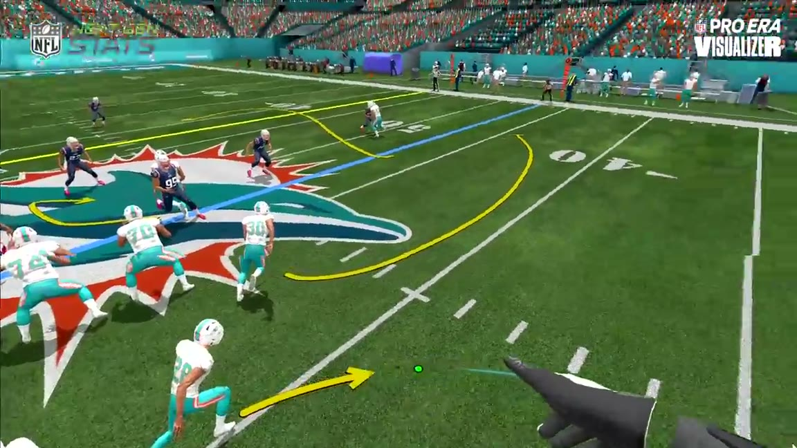
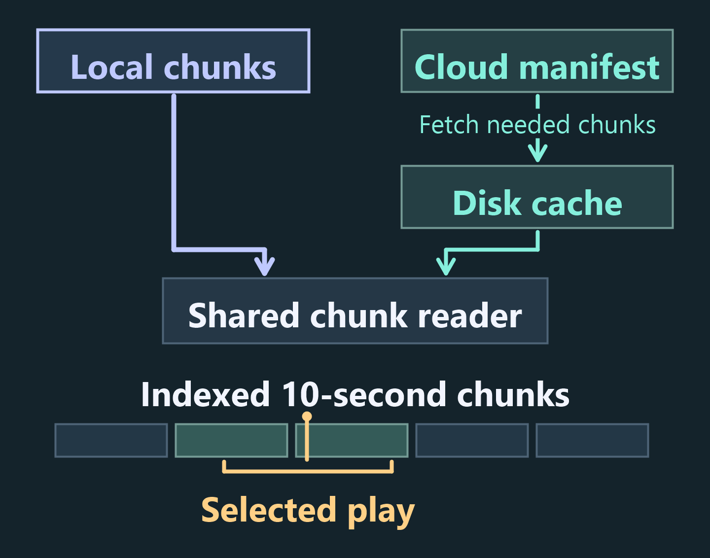
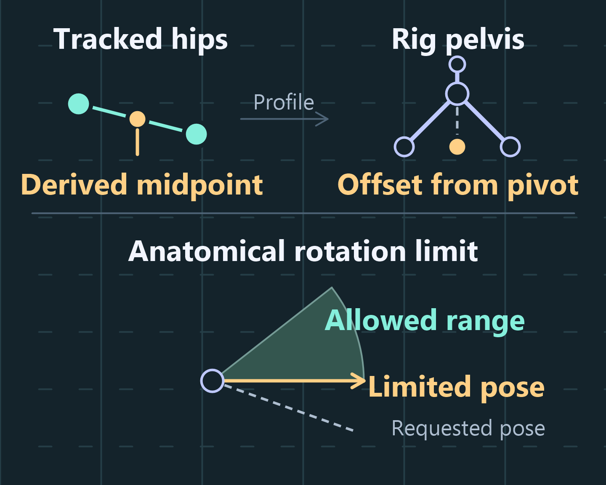
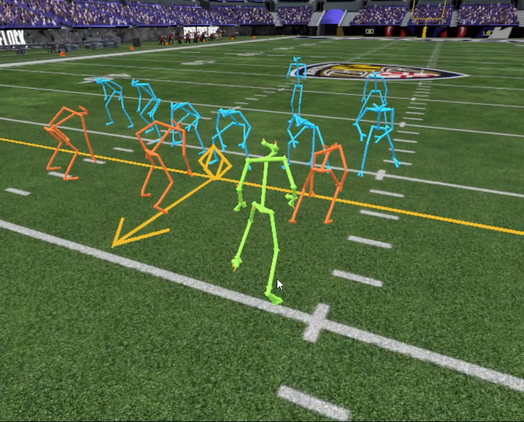
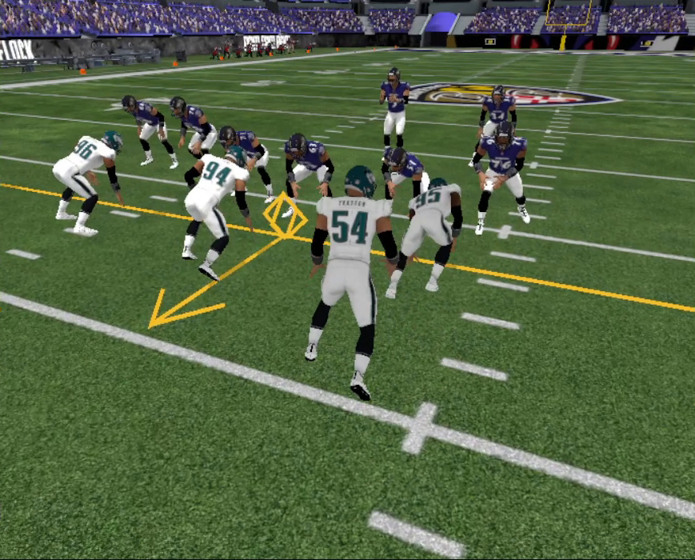
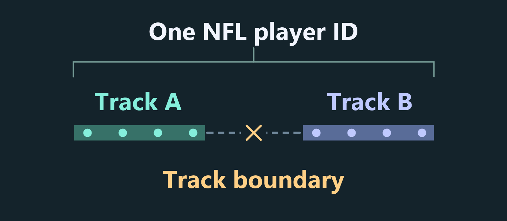
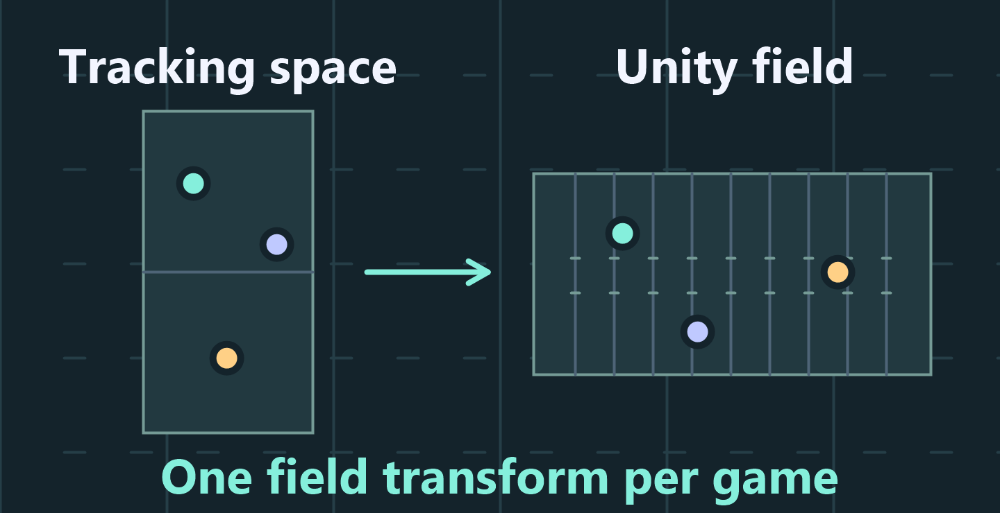
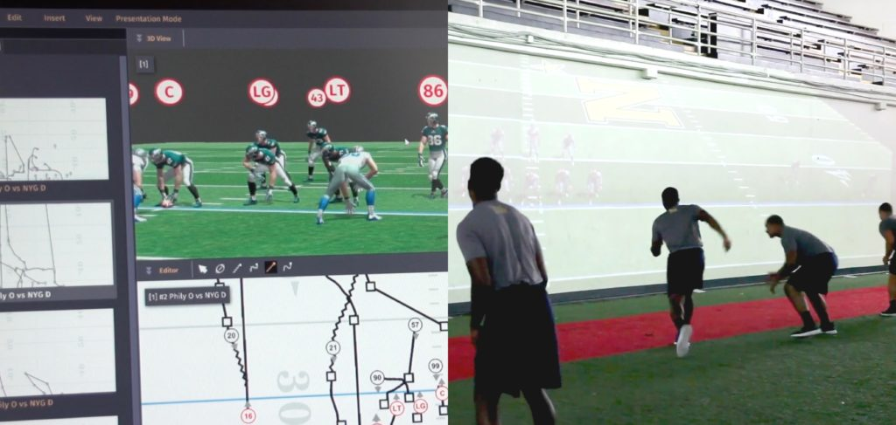
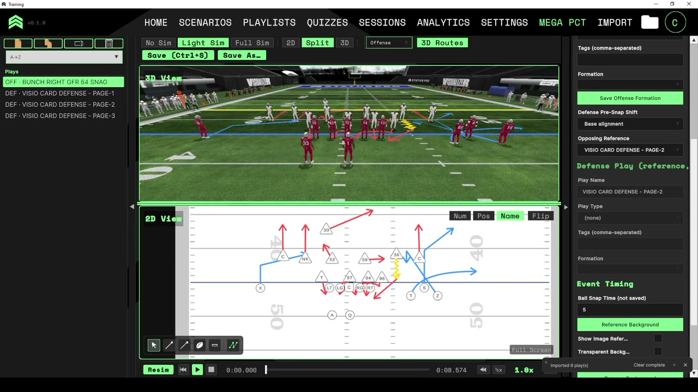

I build character animation systems, gameplay, and authoring tools for shipped games and interactive experiences.
Over 12+ years, my work has included owning core animation technology across four credited editions of NFL PRO ERA and adapting football simulation for ESPN’s NFL Live replay tools.
Unique animation clips in the library for the Meta Quest VR game.
Under 0.1 ms interaction selection
Multi-character candidate selection in profiling, using Unity Jobs and Burst.
13–16 KB/s animation traffic
Down from about 70–120 KB/s in the running game at 60 ticks per second.
1.2 GB smaller build
4.4 → 3.2 GB in one measured build. The same asset changes saved about 200–300 MB of RAM, depending on game mode.
Selected contributions
Football AI and locomotion.
Built goal-driven movement for AI players, including formations and pre-snap transitions. Later helped move character displacement into the gameplay simulation and added distance-matched pivots and stops to the animation layer.
Ball and catch gameplay.
Replaced physics-scene ball-flight forecasts with an analytical trajectory solver and fixed catch timing and sideline rules. Release-candidate profiling recorded a change from up to 2.5 ms to under 0.1 ms for ball-flight prediction.
Runtime animation and authoring tools.
Built two Unity Playables systems for clip selection, playback, motion warping, and coordinated interactions, supporting a library of 3,000+ unique animation clips on Meta Quest. Created timeline, tagging and coverage tools and helped technical artists establish content-review guidelines.
Interaction selection performance.
Used Unity Jobs and Burst to optimize candidate scoring and spatial slot assignment across the multi-character interaction system. Candidate selection took under 0.1 ms in profiling. The full library spans 1,000+ unique interaction controllers and 4,000+ permutations across all interaction types in the game.
Networked animation.
Built custom pose replication that quantized pose data and sent updates at configurable intervals. In the running game at 60 ticks per second, animation traffic fell from about 70–120 KB/s to 13–16 KB/s, and animation memory dropped by 52 MB. For later multiplayer releases, helped adapt most gameplay systems to Photon Fusion’s network simulation cycle, replacing pose replication with more efficient simulation-state replication and selective Playable Graph replication.
Build footprint and asset delivery.
Reduced one measured internal build from 4.4 GB to 3.2 GB through FBX import and mesh compression changes. The same changes saved about 200–300 MB of RAM, depending on game mode, easing memory pressure on Meta Quest. Also narrowed Addressables references to the required subassets while preserving needed dependencies.
The trailer shows the StatusPRO team’s work.
Gameplay animation · 0:58
Multi-Character Interaction System
Shared StatusPRO technology that matches motion-captured animations to the players, objects, and timing of a play, from tackles and blocks to catches and swats.
Players approach contact at different angles, distances, and times. The runtime must assign their roles and choose authored motion that aligns contact between players or with the ball.
My role
I built the Unity authoring and coverage tools, reusable motion-capture library, spatial slotting, selection, and playback, then integrated them into football gameplay.
How it works
Open any diagram at full size in a new tab.
Build the interaction library.
Animators assemble clips around a shared anchor in a custom timeline. Baking positions and timing at multiple entry points produces reusable variants; coverage tools reveal gaps in their on-field coverage.
Assign roles around an anchor.
Eligible participants fill spatial sectors according to their roles and positions. A tackle uses the ball carrier as its anchor; a contested catch uses a locator at the predicted interception point.
In the contested catch, the players’ motion warps toward the ball locator while the ball follows its simulated flight path to contact.
Select the best-fitting controller.
Each scenario compares its baked variants with the live group. Selection can weigh roles, position, facing, velocity, and time to contact. This example isolates distance and angle.
Clips share a timeline, contact marker, and gameplay events. Players with early exit enabled can transition independently after their authored exit points.
Gave NFL PRO ERA context-sensitive, coordinated interactions between multiple players: defenders can join tackles already underway, and catches or swats align with the ball’s location and arrival time. Selection, motion warping, and synchronized playback work together to adapt authored motion to live gameplay.
Runtime performance
Measured selection time: under 0.1 ms with Jobs and Burst. Total library size: 1,000+ controllers and 4,000+ permutations.
Scalable authoring
New assets enter a shared selection process without requiring a growing web of individually tuned animation-transition conditions. Animators expand scenario coverage by adding variants and reviewing their fit in Unity, while gameplay continues to use the same interaction requests.
Reuse across products
The same system serves every edition of NFL PRO ERA, Pro Era Visualizer, and Status Pro Training.
I adapted shared football simulation and rendering code from NFL PRO ERA into an XR replay tool for broadcast analysis on ESPN’s NFL Live.
2025 Sports Emmy nominee ↗ESPN’s NFL Live entry for the George Wensel Technical Achievement Award named the StatusPRO Visualizer.
Unity
C#
Replay systems
Telestration
Explore the broadcast workflow
Problem
An analyst working through a play needs to switch replays, inspect what the quarterback saw, and draw attention to the relevant movement. The standalone broadcast app needed to support that workflow while continuing to use the shared football runtime.
My role
I ported replay, simulation and XR controls to the shared technology, integrated the standalone Visualizer, and addressed compatibility and release issues during the 2025 work. My changes included replay naming compatibility, XR tracking-space corrections, and telestration controls for media and training.
How it works
Reuse the football simulation and replay data. The port connected the Visualizer to the shared systems for loading plays and running the simulation. Compatibility handling preserved older replay names during the transition.
Give the analyst control of the view. The port preserved the ability to select and move players, rerun a play, and switch to the quarterback’s viewpoint. I corrected how headset tracking coordinates were applied during replay.
Expose tools for the broadcast workflow. I integrated telestration, which lets an analyst draw over the replay, and added separate tool trays for the media and training workflows.

Telestration on ESPN’s NFL Live. The analyst draws directly onto the replay from inside the headset.
Results
The Visualizer debuted on ESPN’s NFL Live in 2024. ESPN’s Visualizer segment received a 2025 Sports Emmy nomination in the George Wensel Technical Achievement category.
A Unity research prototype that reconstructs football plays from real-world markerless tracking. Computer vision estimates named 3D landmarks from recorded game footage. The prototype turns that recorded 3D landmark data into an explorable replay with rigged players, synchronized seeking, and selectable cameras.
Tracking landmarks
Pose and player identity
Field-aligned replay
Unity
C#
Python
Google Cloud Storage
GitLab CI/CD
Codex
Explore the reconstruction pipeline
Problem
A full game’s tracking data can take several gigabytes, and its landmarks follow a different structure from the player rig. The viewer has to load the part of the game being explored, turn those points into anatomically plausible motion, and keep player identity and field alignment stable.
My role
I owned design decisions across data delivery, motion transfer and tooling, player identity, environment customization, and performance monitoring and tradeoffs. I integrated the cloud replay library and contributed joint limits and stadium rendering fixes in the later Training-based viewer.
An AI agent implemented the initial data and playback pipeline and the cloud replay components.
How it works
Load and seek on a shared replay clock.
I chose to repackage the source Parquet data into a format suited to Unity playback and designed the local and cloud access paths. A Python converter produces indexed ten-second chunks. The viewer reads them locally or discovers plays through a cloud manifest and game metadata, fetching missing chunks into a verified disk cache. Both paths share a reader and replay clock, preserving exact samples and interpolating only between nearby, valid observations on a continuous track.

The time index identifies the chunks needed for the selected play. The viewer can read those chunks from local storage or retrieve them on demand.
Transfer landmarks to the player rigs.
I designed multiple landmark-to-rig transfer approaches and their user tooling, including IK and joint-limit fixups. Rig-specific profiles map landmarks to anatomical attachments with offsets from bone pivots. Configurable relationships combine weighted landmarks or derive joint orientations from several points. The fitter transfers local rotations and can use inverse kinematics to reach targets; hinge and swing-and-twist limits enforce anatomical ranges. A raw landmark overlay reveals remaining mismatches.

A profile can derive a midpoint from both tracked hips and match it to an attachment offset from the pelvis pivot. The lower view shows a hinge limit clamping a requested rotation to the allowed range.
Tracked landmarks

Fitted player models

The same replay moment and camera, shown as tracked landmarks and fitted player models. Comparing the two views helps reveal differences between the tracked pose and the reconstructed animation.
Resolve player identity and appearance.
An NFL player ID identifies the person, while track IDs and continuity segments determine which samples can be interpolated together. Overlapping streams for the same player are flagged as ambiguous. Source names and jersey numbers take precedence, and the matching season’s roster supplies appearance defaults when available. Unmatched players use generic appearances.

The viewer can keep the same player selected across an unambiguous track change. Pose interpolation stays within a continuous track.
Register the field and set the venue.
One coordinate transform per game aligns the tracking axes and horizontal scale to the field’s sidelines and goal lines. NFL hash marks remain consistent across venue choices. The viewer suggests a home-team stadium and lets the operator set the venue, field branding, uniforms, and available lighting or weather independently.

Every play in a game uses the same horizontal mapping, so positions stay aligned to the NFL yard lines and hashes.
Results
Complete play reconstruction
The prototype reconstructed a football play from recorded tracking data with 22 animated player models, team uniforms, player names and jersey numbers, and an NFL stadium environment.
Customizable presentation
Synchronized playback and selectable cameras made the reconstructed play explorable. Controls for stadium, field branding, uniforms, and available lighting and weather let the team evaluate different presentation styles using the same underlying play.
Support for continued development
The prototype demonstrated the approach’s potential and secured stakeholder support for further development, with greater realism and visual quality as the next priorities.
02 / Football tools
Simulation & training
Unity tools for designing football plays and training with custom formations.

BYTECUBED LABS / PC / 2019
Pre-Game Prep
Unity Developer
I built core parts of the Unity whiteboard editor and animated 3D preview for a football play-authoring tool used in athlete training.
Built tools to select and move individual players or groups, preview and snap placements, draw straight or curved routes, and author ball trajectories. Added configurable player icons so users could distinguish roles on the whiteboard.
Reversible edits and play-data checks.
Implemented undoable commands for common edits and wrote Play Mode regression tests for player and ball moves, markers and properties. Added validation to catch missing references and route timing inconsistencies.
Scrubbable 3D previews.
Built playback that samples recorded player and ball motion on a separate timeline. Users could scrub, change speed, or jump to formation and snap, while edits rebuilt the preview from the editable play data.
Motion matching and plugin integration.
Migrated the 3D playback path from Mecanim state machines to MxM. Worked with the plugin author on code and testing, added preprocessing hooks for contact poses, and timed runtime throw and catch events to the ball.
Tracking data to editable plays.
Converted NFL Next Gen Stats player and ball samples into formations, routes and trajectories that could be edited. The import could align a sequence to its initiating event, trim the time range, and simplify sampled routes.

StatusPRO / PC, Mac & tablets / 2026
Status Pro Training
Senior Gameplay & Animation Engineer
I worked on shared simulation and authoring features that let users customize football plays and preview the results in Training.
Custom formation
Independent actions
AI coordination
Unity
C#
Spline routes
Mecanim
JSON
Selected contributions
Editable formations and play starts.
Replaced fixed multi-character sequences at play start with independent player actions coordinated by gameplay AI. Users could adjust starting positions while the simulation handled routing players into place and timing their arrivals.
Curved routes and versioned play data.
Built shared spline-based route legs and runtime following, then integrated versioned loading into Training’s editor and preview. Migration fixtures covered upgrading older saved play files.
Per-leg movement and turns.
Added per-leg movement options, including Creep and Backpedal, and made speed rules consistent between preview and runtime. Helped integrate shared distance-matched turns into route authoring with save, reopen, and undo support.
Real and fake handoffs.
Added authoring and validation for exchanges on curved routes. The editor exposed exchanges that could not line up so users could repair them, using the same validity rules as save and simulation.
Repeatable simulation and recording.
Integrated a shared reset for players, the ball, AI and interaction state. Added explicit handling for snaps, kickoffs and virtual starts, and made recording completion depend on simulation time.
Consistent 2D and 3D previews.
Fixed roster identity handling when entries shared an embedded ID. Kept the selected athlete, role, starting position and stance consistent across the whiteboard, 3D preview and undo history.
03 / Bully! Entertainment
Earlier projects
A selection from 10+ projects I delivered or supported, spanning games, mobile apps, interactive installations, and prototypes.